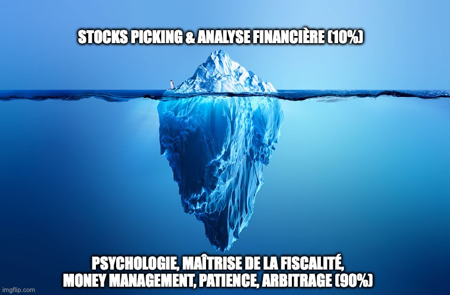
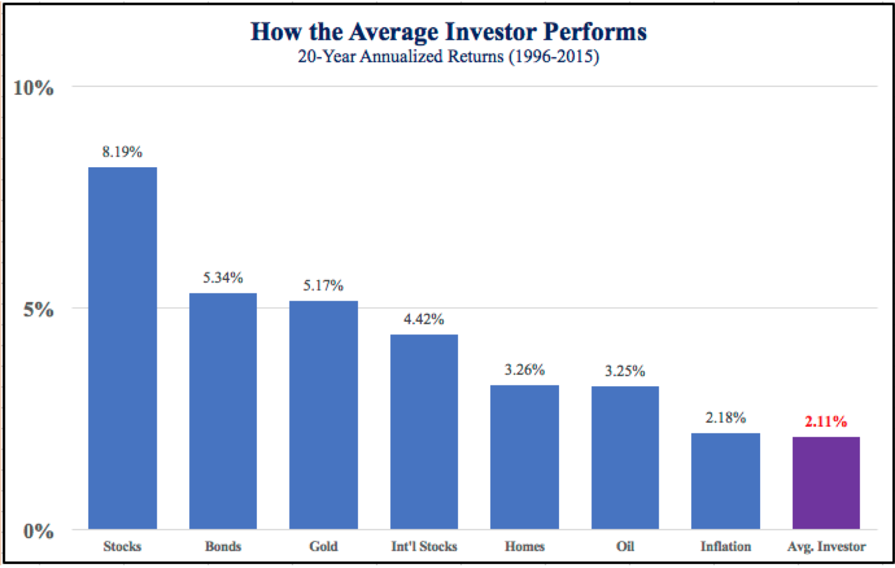

Jusqu’à présent, vous avez brillamment enfilé la casquette de l'analyste financier. Nous avons fait un travail d'orfèvre : décortiqué des bilans comptables complexes, traqué les avantages concurrentiels inébranlables (Moats), étudié la rentabilité des capitaux et modélisé des valorisations d'une précision chirurgicale. Vous avez appris à séparer le bon grain de l'ivraie, à isoler la rare élite des entreprises mondiales qui méritent réellement que vous y placiez votre capital.
Mais voici la dure et froide réalité des marchés boursiers : savoir analyser une entreprise exceptionnelle ne suffit absolument pas pour gagner de l'argent.
L'analyse approfondie n'est en fait que le prologue de votre aventure en tant qu'investisseur. La différence fondamentale entre un brillant théoricien qui a toujours raison sur le papier, et un investisseur redoutablement rentable dans la vraie vie, se joue presque exclusivement sur un terrain bien plus pragmatique : l'exécution.

Comme l'illustre parfaitement la métaphore de l'iceberg ci-dessus, le "Stocks Picking" et l'analyse financière ne représentent que la pointe émergée de la stratégie de l'investisseur, soit environ 10% de l'équation globale. C'est la partie intellectuellement stimulante, celle dont on parle dans les médias. Mais la véritable fondation qui soutient vos rendements à long terme, cette masse colossale cachée sous la surface, est constituée d'éléments bien moins glamour mais infiniment plus déterminants : la psychologie, la stricte maîtrise de la fiscalité, le money management rigoureux, la patience à toute épreuve, et la science de l'arbitrage.
Le Fossé Comportemental : Le coût d'une mauvaise exécution 📉
Pour vous convaincre de l'importance vitale de cette "partie immergée", prenons un instant pour examiner les chiffres réels. Pourquoi est-il si crucial de passer d'un simple analyste à un véritable gestionnaire méthodique ? La réponse se trouve dans le graphique ci-dessous, issu des célèbres études sur le comportement des investisseurs (souvent appelées le "Behavioral Gap").

Si l'on observe les rendements annualisés sur une longue période de 20 ans (de 1996 à 2015), les actions ("Stocks") ont généré une performance moyenne de 8.19% par an. En investissant de manière passive, sans même essayer d'être intelligent, n'importe qui aurait pu s'enrichir confortablement. Cependant, sur cette même période, l'investisseur moyen ("Avg. Investor") n'a récolté qu'un maigre rendement de 2.11%. C'est non seulement catastrophique par rapport au potentiel du marché, mais c'est même inférieur au taux de l'inflation sur cette période (2.18%), ce qui signifie une perte de pouvoir d'achat réel. L'investisseur moyen a également fait moins bien que le marché obligataire (Bonds à 5.34%), que l'or (Gold à 5.17%), que les actions internationales (Int'l Stocks à 4.42%) ou encore que l'immobilier résidentiel (Homes à 3.26%) et le pétrole (Oil à 3.25%).
Comment expliquer un tel naufrage ? La réponse tient en un mot : l'émotion. L'investisseur moyen n'a pas de plan strict. Il achète frénétiquement en haut d'un cycle par peur de rater une opportunité (FOMO), et revend en panique au creux d'un krach boursier. Son exécution est désastreuse. Il se laisse dévorer par les frais de transaction excessifs et ignore les avantages fiscaux qui s'offrent à lui. C'est exactement ce que nous allons éradiquer dans ce module.
La citation à retenir 💬
"Réussir ses investissements sur toute une vie ne nécessite pas un QI stratosphérique, une vision des affaires hors du commun ou des informations secrètes. Ce qu'il faut, c'est un cadre intellectuel solide pour prendre des décisions, et la capacité d'empêcher les émotions de ronger ce cadre."
— Warren Buffett
Avoir raison sur le papier, mais perdre de l'argent en réalité 💔
Il y a un piège cruel en investissement : il est tout à fait possible d'avoir fondamentalement raison sur la qualité d'une entreprise, et pourtant de détruire son capital. L'excellence d'une entreprise ne garantit pas la rentabilité de votre portefeuille si l'intendance ne suit pas.
Imaginez que vous ayez déniché une pépite. L'entreprise est formidable et son action grimpe de +10% par an. L'analyste en vous exulte, il avait vu juste ! Mais regardons maintenant ce que le mauvais gestionnaire en fait : vous passez vos ordres chez une banque traditionnelle qui vous ponctionne 2% à chaque transaction. Au lieu de loger cette action dans une enveloppe fiscale optimisée (comme un PEA), vous la placez sur un Compte-Titres classique, vous amputant de 30% d'impôts sur chaque dividende et plus-value. Pire encore, au moindre hoquet du marché, vous prenez peur, vendez votre position pour la racheter 3 mois plus tard, générant encore de nouveaux frais et une perte d'opportunité.
Le résultat ? L'entreprise a généré +10%, mais votre rendement net, après le passage du rouleau compresseur des "frictions" (frais, impôts, mauvais timing émotionnel), finit péniblement à +2%. Vous aviez le bon diagnostic, mais l'opération a tué le patient. L'analyse génère la performance brute ; seule l'exécution mécanique protège votre performance nette.
Vaincre la Paralysie de l'Analyse 🛑
Un autre fléau guette ceux qui se plongent trop profondément dans l'étude des bilans financiers : la "Paralysie de l'Analyse". À force de chercher l'investissement parfait, de scruter le moindre ratio d'endettement ou d'attendre que la valorisation soit décotée au centime près, de nombreux investisseurs brillants finissent par... ne jamais investir un euro.
Ils restent éternellement sur le quai, regardant le train des intérêts composés s'éloigner sans eux. Ils se persuadent d'attendre que "tous les voyants macro-économiques soient au vert", que "l'incertitude politique se dissipe", ou que "le marché corrige encore un peu". Spoiler : les marchés financiers sont, par nature, construits sur l'incertitude. Le moment parfait n'existe pas.
Ce module a pour vocation de vous fournir des processus pour briser cette paralysie. L'exécution consiste à accepter une part de risque calculée et à appuyer sur la gâchette. Une exécution imparfaite aujourd'hui vaudra toujours infiniment plus que le plan d'investissement parfait que vous appliquerez... demain.
L'Asymétrie des Décisions : Un marathon continu ⚖️
Il existe une différence majeure entre la posture de l'analyste et celle du gestionnaire : l'échelle du temps. En tant qu'analyste, vous prenez la décision d'acheter une seule fois. C'est un événement ponctuel, excitant, presque cathartique. Une fois l'ordre exécuté, le travail de l'analyste est terminé.
Le gestionnaire de portefeuille, lui, est confronté à ce que l'on appelle "l'Asymétrie des Décisions". Tous les jours de l'année, à chaque fois que la bourse ouvre ses portes, le gestionnaire doit prendre silencieusement et consciemment la décision de ne pas vendre. Conserver une action de grande qualité (le concept même du Quality Investing) pendant des années demande une discipline et une force de caractère monumentales. L'exécution n'est pas un sprint vers le bouton d'achat ; c'est un marathon psychologique qui s'étale sur des décennies.
De l'Analyste au Gestionnaire de Portefeuille 💼
Trouver la bonne entreprise n'est que la moitié du chemin. L'autre moitié consiste à transformer cette conviction en un rendement sonnant et trébuchant. Pour cela, le gestionnaire de portefeuille que vous allez devenir doit répondre à des questions froides et hautement stratégiques :
- Où allez-vous loger cette action pour que l'État ne vous ampute pas de 30% de vos gains ? Le choix de l'enveloppe est déterminant.
- Chez quel courtier allez-vous opérer pour réduire vos frais de transaction à presque zéro ?
- Quelle part de votre capital total (la pondération) allez-vous allouer à cette entreprise spécifique pour optimiser le ratio rendement/risque ?
- Comment allez-vous déployer votre capital de manière intelligente pour tirer profit de la volatilité inévitable des marchés ?
- Et surtout, quel est le processus mécanique exact qui déclenchera votre prise de bénéfices ou la clôture d'une position dans 5 ou 10 ans ?
Dans ce sixième module, nous changeons donc officiellement de paradigme. L'analyste conceptuel laisse sa place au gestionnaire pragmatique. Fini la théorie pure, les longs rapports annuels poétiques et les modèles abstraits sur Excel. Bienvenue dans l'arène de l'exécution.
Le Programme des Opérations 🗺️
Ce module est le pont essentiel entre votre cerveau (vos convictions d'investissement durement acquises) et la réalité de votre patrimoine financier. Nous allons y aborder méthodiquement tous les aspects pragmatiques, administratifs et stratégiques de la vie quotidienne d'un investisseur :
1. Les Fondations et l'Optimisation Fiscale : Avant d'acheter la moindre action, il faut préparer un terrain fertile. Nous allons décortiquer en détail les enveloppes fiscales (le fameux combat Compte-Titre Ordinaire vs PEA), vous guider pas à pas dans le choix stratégique de votre courtier, et démystifier les spécificités de la fiscalité belge et française. L'objectif est clair : la puissance des intérêts composés ne doit pas être entravée par une fuite de capitaux vers les impôts et les banques.
2. Le Money Management et la Stratégie Structurelle : Construire un portefeuille robuste, ce n'est pas empiler des actions de qualité au hasard. C'est une architecture. Combien de lignes devez-vous détenir pour être suffisamment diversifié sans pour autant diluer l'impact de vos meilleures idées ? Comment gérer votre niveau de liquidités (votre Cash) pour que les inévitables krachs boursiers se transforment pour vous en opportunités d'achat historiques plutôt qu'en moments de panique ?
3. L'Art du Timing et de l'Arbitrage Tactique : Vous allez maîtriser la notion cruciale de Prix de Revient Unitaire (PRU). Nous définirons ensemble des règles mathématiques strictes pour savoir quand entrer sur une valeur, quand renforcer agressivement une position qui chute de manière irrationnelle, et définir à l'avance le signal qui vous fera vous en séparer définitivement.
4. Le Pilotage Opérationnel au Quotidien : Gérer un portefeuille d'actions n'est pas un jeu de hasard, c'est piloter une holding financière dont vous êtes le PDG. Nous verrons comment rééquilibrer vos lignes de manière asymétrique, comment optimiser le réinvestissement de vos flux de dividendes, et comment mesurer avec honnêteté la vraie performance de votre gestion face au marché (le Benchmarking) en utilisant les outils de pointe à votre disposition.
L'investisseur : Un pilote de ligne face aux turbulences ✈️
Gérer un portefeuille ne doit jamais être une source d'émotion ou de stress. Lorsqu'un avion de ligne traverse une sévère zone de turbulences (l'équivalent d'un krach boursier), le pilote ne regarde pas par la fenêtre en hurlant de panique. Il fixe calmement son tableau de bord, analyse ses instruments de vol, et suit méticuleusement sa "Checklist" de procédures d'urgence. Ce module a pour vocation de vous fournir précisément ces instruments de bord et ces "processus métiers" stricts, dignes d'un gérant de fonds professionnel, pour que vous puissiez traverser toutes les conditions de marché avec une sérénité absolue.
Le travail d'investigation de fond est derrière vous. Vous savez désormais avec certitude quoi acheter. Il est maintenant temps d'apprendre avec la même rigueur comment l'acheter et comment piloter cet actif pour les décennies à venir. Attachez vos ceintures, ouvrez grand vos instruments de navigation : on passe à l'action !
🔑 Ce qu'il faut retenir
L'analyse vous donne l'avantage, mais l'exécution vous donne la rentabilité. Retenez que 90% du succès ne vient pas du choix de l'action, mais de votre capacité à ne pas saboter votre plan par l'émotion. Passer de l'analyste au gestionnaire, c'est accepter que le "moment parfait" n'existe pas et qu'un processus industriel froid est votre meilleure arme contre le "Fossé Comportemental" qui ruine l'investisseur moyen.